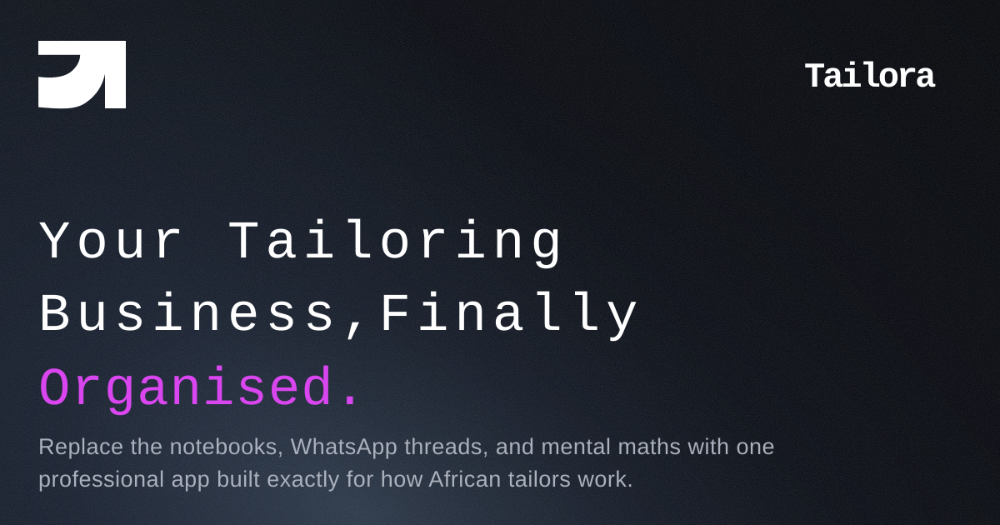

If you are a tailor in Nigeria and you have been in business for more than a year, you have almost certainly lost money you should have collected. Not because of bad clients — though those exist — but because of bad systems. A notebook that got wet. A client's balance you forgot to follow up. A deposit you cannot prove you collected. An order you completed but cannot remember the full price for.
This is not a small problem. Research into small business cash flow in Nigeria consistently shows that most tailors and fashion designers leave between 20 and 40 percent of their potential monthly revenue uncollected. Over a year, for a tailor doing moderate volume, that is hundreds of thousands of naira that simply disappears.
The good news is that the causes are completely fixable. Here are the five biggest ways Nigerian tailors lose money — and exactly how to stop it.
1. No System for Tracking Order Deposits
The standard practice for most tailors is to collect a deposit — often 50% upfront — before starting an order. The problem is how this gets recorded. A number in a notebook. A WhatsApp message you scroll back to find. A mental note. None of these work reliably at scale.
When a client returns to collect their outfit and claims they already paid, what do you have? If your answer is anything other than a clear digital record with a timestamp, you have a problem. Some clients are genuinely confused about what they paid. Others are not confused at all — they are testing whether you have proof.
The fix: Record every payment — deposit and balance — immediately when it happens. The record should include the amount, the date, the payment method, and the order it applies to. An app like Tailora does this automatically and links every payment to the specific order. Your phone becomes the receipt book that cannot get lost.
2. Forgetting About Outstanding Balances
You complete an order. The client picks it up. They pay a portion of the balance and promise to bring the rest "tomorrow." Tomorrow becomes next week. Next week becomes whenever you see them. The balance gets smaller in your memory even if it doesn't change in reality.
This problem multiplies fast. If you have 30 active orders and half of them have outstanding balances you are not actively tracking, you could be owed tens of thousands of naira that you have mentally written off.
The fix: Every order should have a clear balance_due figure that is always visible to you. You should see it on your dashboard every day. Automated reminders should alert you — and optionally the client via WhatsApp — when a balance is overdue. This is not aggressive. It is professional. Clients respect a business that knows its numbers.
3. Underpricing Because You Cannot Remember What Went Into an Order
How much did that agbada actually cost to make? How many hours did the embroidery take? What was the fabric cost? If you are quoting from memory at the time of delivery, you are almost certainly undercharging. Memory compresses the effort. The price you quote reflects what you think the order cost, not what it actually cost.
The fix: Break every order into line items at the start — fabric, labour, embellishment, accessories. Record the costs as you go. When it is time to invoice, your price is built on real numbers, not a vague impression. Clients also take itemised prices more seriously. It signals that you run a professional operation.
4. No Record of What Was Agreed
A client asks for a lemon yellow kaftan with gold trim. You make a lemon yellow kaftan with gold trim. She arrives and says she asked for cream. You know she did not. But you have no record. The WhatsApp message she sent is buried under 400 other messages. You end up redoing part of the order at your own expense to keep the peace.
This happens to almost every tailor working at volume, and it is entirely preventable.
The fix: Every order should have written style specifications that are captured before you cut a single piece of fabric. Garment type, colour, fabric source, style description, special instructions. When it is written down and linked to the client's record, there is no dispute. You either made what was agreed, or you did not — and you can both see the record.
5. Losing Clients Between Orders
Your best client orders an outfit for a wedding. She loves it. She tells three friends about you. Then three months pass and she needs another outfit. She would come back to you — but she has half forgotten your number, she is not sure if you are still taking orders, and it is easier to just find someone else on Instagram.
Client retention is where the real money is in tailoring. Acquiring a new client is work. Keeping a client who already trusts you costs almost nothing. But keeping them requires staying present.
The fix: Follow up with past clients. Not constantly — but meaningfully. A WhatsApp message two months after their last order asking how the outfit has been wearing. A reminder as the festive season approaches. These messages cost nothing to send and they bring clients back. A tailoring management app that tracks your client base makes this systematic rather than random.
The Common Thread
Every problem above comes down to the same root cause: running a business on memory and paper in an environment that moves too fast for either to keep up. The tailors who are growing their income consistently are not necessarily the most skilled sewers — though many are excellent. They are the ones who treat their tailoring practice as a business, with the systems that word implies.
Tailora was built specifically for this. It gives every tailor a dashboard for their orders, their clients, their measurements, and their money — on the phone they already have, in a way that requires no accounting knowledge to use. The shift from notebook to app takes a day. The difference in clarity it brings lasts the lifetime of your business.

Stop losing money to bad systems.
Tailora is free to download. Manage your orders, clients, and payments from your phone — starting today.